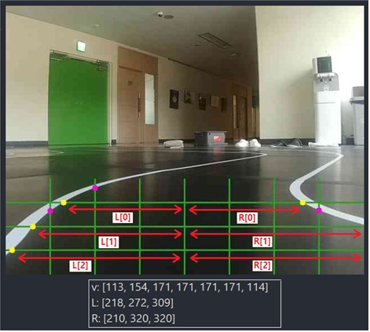
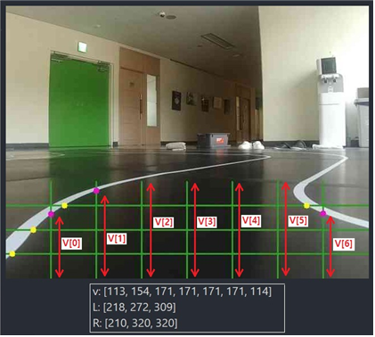

이미지에 격자를 생성하여 데이터를 얻고자 할 때, 어느 값을 데이터로
결정할 것인가에 대해 정해진 것은 없습니다. 실제 자율주행자동차에서 주행
알고리즘을 만들어왔던 역사에서는 가운데 세로선(중앙선)에서 떨어진
거리값을 데이터로 얻고, 이미지 바닥에서 차선까지의 거리값을 데이터로
얻었습니다. 편의상 여기에서도 이 방법을 따르도록 하겠습니다.

L 값은 중앙의 세로선에서 왼쪽으로 떨어져 있는 픽셀값이다.
L[0]의 값은 2칸을 넘고, 3칸은 안되므로 160~239 사이가 된다. ⇨ L[0] = 218
L[1]의 값은 3칸을 넘고, 끝은 아니므로 240~319 사이가 된다. ⇨ L[1] = 272
L[2]의 값은 3칸을 넘고, 끝은 아니므로 240~319 사이가 된다. ⇨ L[2] = 309
R 값은 중앙의 세로선에서 오른쪽으로 떨어져 있는 픽셀값이다.
R[0]의 값은 2칸을 넘고, 3칸은 안되므로 160~239 사이가 된다. ⇨ R[0] = 210
R[1], R[2]의 값은 없다. 이때의 디폴트 값은 320이다. ⇨ R[1] = 320, R[2] = 320

V[0]의 값은 2칸을 넘고, 3칸은 안되므로 86~128 사이가 된다. ⇨ V[0] = 113
V[1]의 값은 3칸을 넘고, 끝은 아니므로 129~170 사이가 된다. ⇨ V[1] = 154
V[2] ~ V[5]의 값은 없다. 이때의 디폴트 값은 171이다. ⇨ V[2] = 171, V[3] = 171, V[4] = 171, V[5] = 171
V[6]의 값은 2칸을 넘고, 3칸은 안되므로 86~128 사이가 된다. ⇨ V[6] = 114